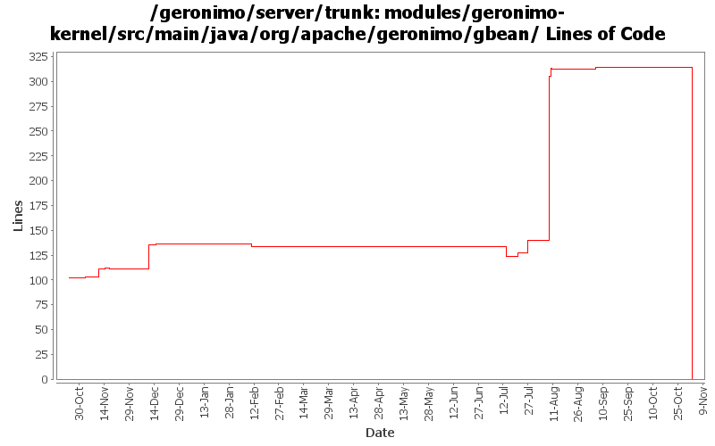

[root]/modules/geronimo-kernel/src/main/java/org/apache/geronimo/gbean
 runtime
(0 files, 0 lines)
runtime
(0 files, 0 lines)

| Author | Changes | Lines of Code | Lines per Change |
|---|---|---|---|
| Totals | 112 (100.0%) | 488 (100.0%) | 4.3 |
| jaydm | 16 (14.3%) | 283 (58.0%) | 17.6 |
| djencks | 15 (13.4%) | 72 (14.8%) | 4.8 |
| akulshreshtha | 7 (6.3%) | 64 (13.1%) | 9.1 |
| hogstrom | 4 (3.6%) | 32 (6.6%) | 8.0 |
| kevan | 44 (39.3%) | 18 (3.7%) | 0.4 |
| gdamour | 1 (0.9%) | 13 (2.7%) | 13.0 |
| jlaskowski | 1 (0.9%) | 6 (1.2%) | 6.0 |
| prasad | 24 (21.4%) | 0 (0.0%) | 0.0 |
GERONIMO-3565. Modules distributed amongst framework/modules and plugins
0 lines of code changed in 24 files:
GERONIMO-3330 GERONIMO-3453 More changes. Plugin installer now installs stuff into config.xml, config-substitutions.properties, and external_aliases.properties. Car-maven-plugin more or less gets this stuff into the geronimo-plugin.xml.
2 lines of code changed in 1 file:
Changed simple string appending to using StringBuilder to increase performance
as suggested by Jarek (thanks for the suggestion)
98 lines of code changed in 5 files:
Added serial version IDs to modified classes
(to protect backward compatibility test)
9 lines of code changed in 5 files:
Added methods to allow gbean info to be returned as xml.
(similar to 'toString' methods)
176 lines of code changed in 6 files:
Improved error messages
14 lines of code changed in 1 file:
Retrying rev 499201 with some modifications. The getters/setters must be added explicitly using addOperation to be able to invoke them using kernel.invoke(...)
17 lines of code changed in 2 files:
GERONIMO-3316 Better messages when manifest cp resolution encounters problems. Also generified some more gbean stuff
41 lines of code changed in 2 files:
GERONIMO-3132 GERONIMO-3165. Fix a bunch of stuff with locating persistence.xml and persistence unit jars. Hook up with openejb for extended persistence contexts
8 lines of code changed in 1 file:
GERONIMO-2982 Prepend / to path url patterns in servlet mappings if missing. Also some much bigger changes to improve info in exception messages and some genericization
2 lines of code changed in 1 file:
Try to help show what went wrong if a configuration won
't start
5 lines of code changed in 1 file:
GERONIMO-2607 reversing the kernel patch from ealier. Seems to have broken openejb. We'll reapply when the cause has been corrected.
16 lines of code changed in 2 files:
GERONIMO-2607 : Deprecated old addOperation methods, added private
addOperation methods
updated GBeanInfoTest
Modified GBeanOperation, this class is not serialized
16 lines of code changed in 2 files:
Geronimo-2607 Added serialVersionUID to GOpearationInfo to maintain compatibility of GBeanInfo
Enable compatibility test
Changed Log4jService to use old addOperation
1 lines of code changed in 1 file:
GERONIMO-2607 Added returnType to GOperationInfo, This modifies GBeanInfoBuilder and breaks backward compatibility
45 lines of code changed in 3 files:
GERONIMO-2537 Update the src headers in server/trunk/modules to be compliant with the new ASF src header and copyright policy (http://www.apache.org/legal/src-headers.html). I also did some cleanup of the src headers and tried to make them all a consistent format
18 lines of code changed in 44 files:
GERONIMO-2548 exclude operations of java.lang.Object from GBeanInfo
1 lines of code changed in 1 file:
Fix a backward compatibility problem with GBeanInfo that I have not identified (thanks David J. for spotting it).
13 lines of code changed in 1 file:
GERONIMO-2541 priority order for gbeans, including Gianny's backward compatibility patch
0 lines of code changed in 6 files:
Partial fix for GERONIMO-2537 All Geronimo source files must be brought in line with the new ASF source header and copyright notice policy
The modules directory is supposed to be migrated. There're some issues with some files, but they'll be handled manually
6 lines of code changed in 1 file:
GERONIMO-2514 fix some reference pattern bugs for config.xml
0 lines of code changed in 2 files: